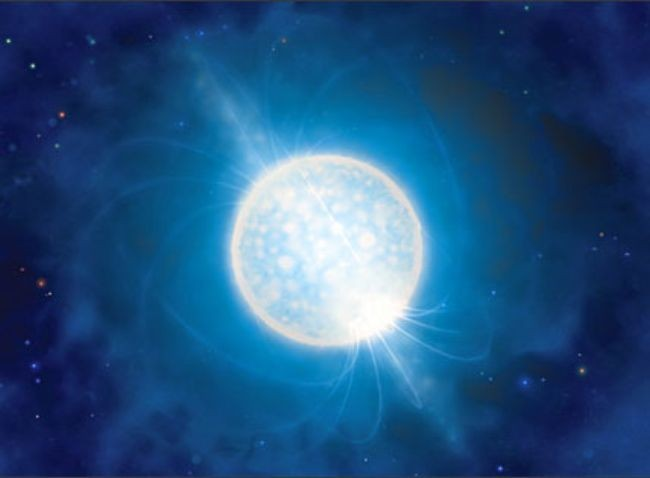

Las estrellas son enormes esferas de gas que brillan gracias a reacciones nucleares que ocurren en su interior. Dependiendo de su masa, tamaño, temperatura y edad, las estrellas
se clasifican en diferentes tipos:
Enanas rojas
Son las estrellas más pequeñas y frías del universo. Viven miles de millones de años y son muy comunes, aunque difíciles de ver a simple vista.
Estrellas como el Sol
Estrellas de tamaño mediano, como nuestro Sol. Viven alrededor de 10 mil millones de años y al final de su vida se transforman en gigantes rojas y luego en enanas blancas.
Gigantes y supergigantes
Estas estrellas son mucho más grandes y brillantes que el Sol. Consumen su energía rápidamente y tienen vidas cortas. Al morir, pueden explotar en una supernova.
Estrellas de neutrones

Después de una supernova, si la estrella no colapsa en un agujero negro, se convierte en una estrella de neutrones: objetos extremadamente densos, del tamaño de una ciudad, pero con más masa que el Sol.
Estrellas binarias
No todas las estrellas viven solas. Algunas forman sistemas de dos o más estrellas que orbitan entre sí, conocidas como sistemas binarios o múltiples.
Dato curioso:
¡Hay una estrella llamada UY Scuti que es una de las más grandes conocidas! Si estuviera en el lugar del Sol, llegaría más allá de la órbita de Júpiter.